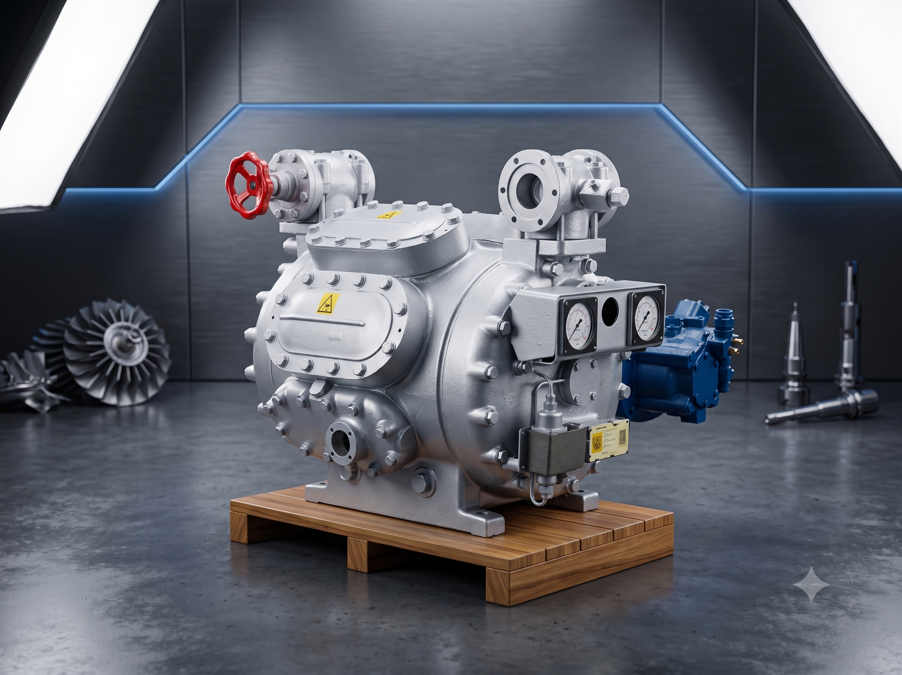

01
PRIMARY SPECIALTY
Compressor Servicing
We specialize in the inspection, maintenance, repair, troubleshooting and complete overhauling of marine compressors used in starting air, service air and refrigeration systems.
Marine Compressor Specialists
Inspection • Repair • Overhauling • Testing
Complete compressor overhauling
Compressor inspection
Preventive maintenance
Routine maintenance
Onboard troubleshooting
Emergency breakdown repairs
Valve reconditioning
Valve & valve-seat servicing
Crankshaft inspection & replacement
Bearing inspection & replacement
Piston servicing
Cylinder liner servicing
Connecting rod servicing
Pressure testing
Performance testing
Compressor commissioning
OEM spare parts replacement
Request Compressor Service